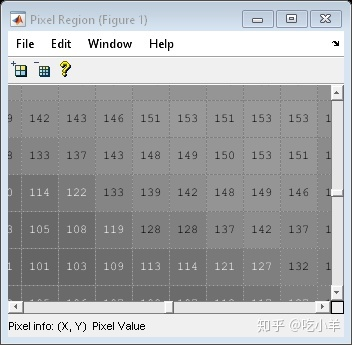
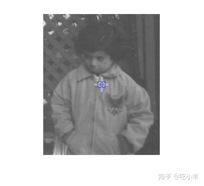
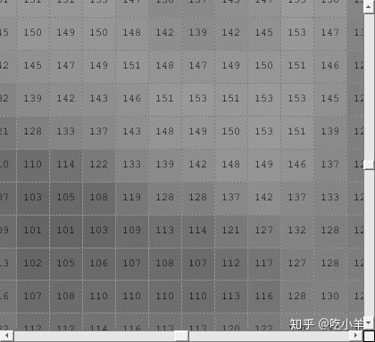
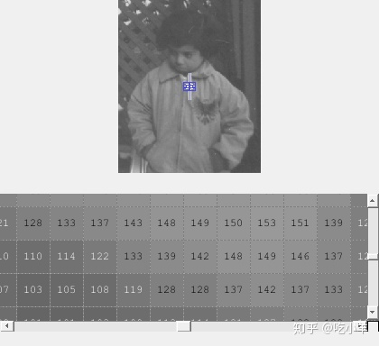

Home
本示例说明如何在单独的图形窗口中创建像素区域工具并嵌入现有图形窗口中。
在独立图形窗口中创建像素区域工具
将图像读入工作区。
I = imread("pout.tif");
在图形窗口中显示图像。将目标图像的手柄返回到himage。
himage = imshow('pout.tif');
要在单独的窗口中创建像素区域工具，请使用impixelregion函数。
hpixreg = impixelregion(himage);


在现有图中嵌入像素区域工具
创建一个新的图形窗口并返回图形的句柄。
fig = figure;
创建轴并在轴中显示目标图像。
ax = axes; img = imshow(I);
要在与目标图像相同的图中创建像素区域工具，请使用impixelregionpanel函数。将目标图像的父图形指定fig为“像素区域”工具的父图形。
pixregionobj = impixelregionpanel(fig,img);

像素区域工具重叠并隐藏原始图像。要同时看到图像和工具，请移动它们的位置，以免它们重叠。
set(ax,'Units','normalized','Position',[0 .5 1 .5]); set(pixregionobj,'Units','normalized','Position',[0 .04 1 .4]);

======================================================================
我的测试结果及程序
下面是我测试的代码：

注：本文根据MATLAB官网内容修改而成。